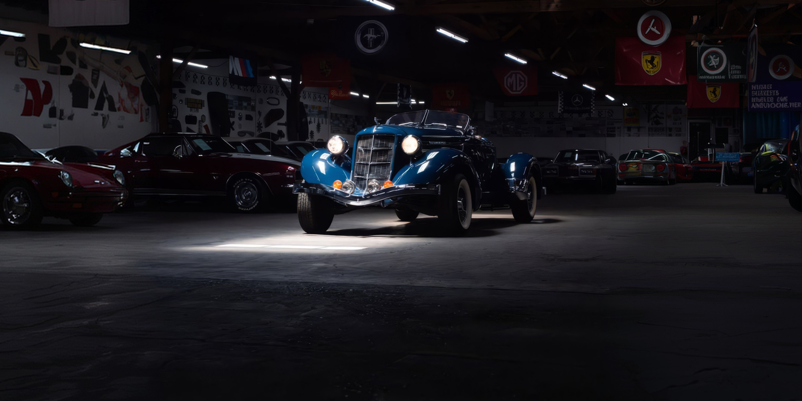
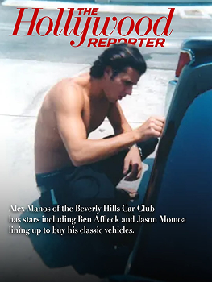
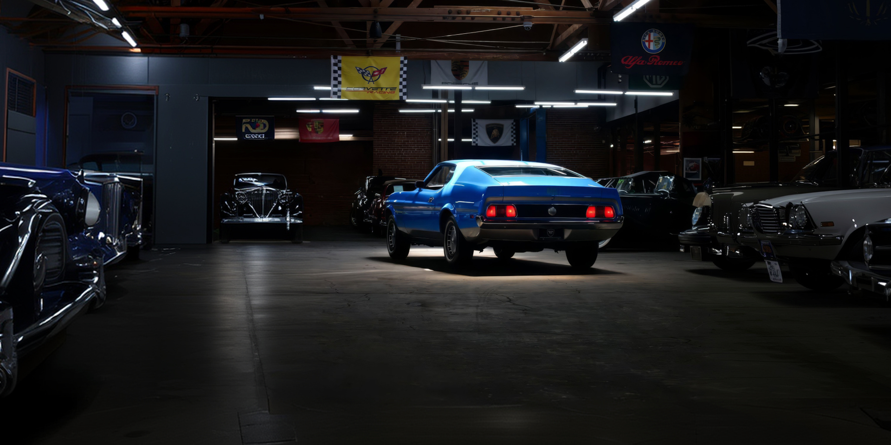
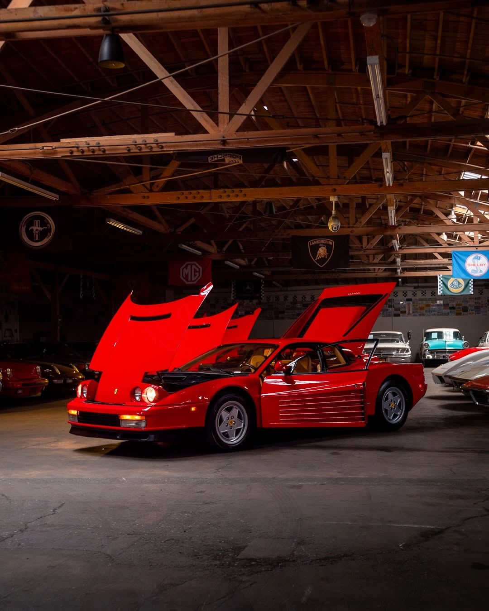
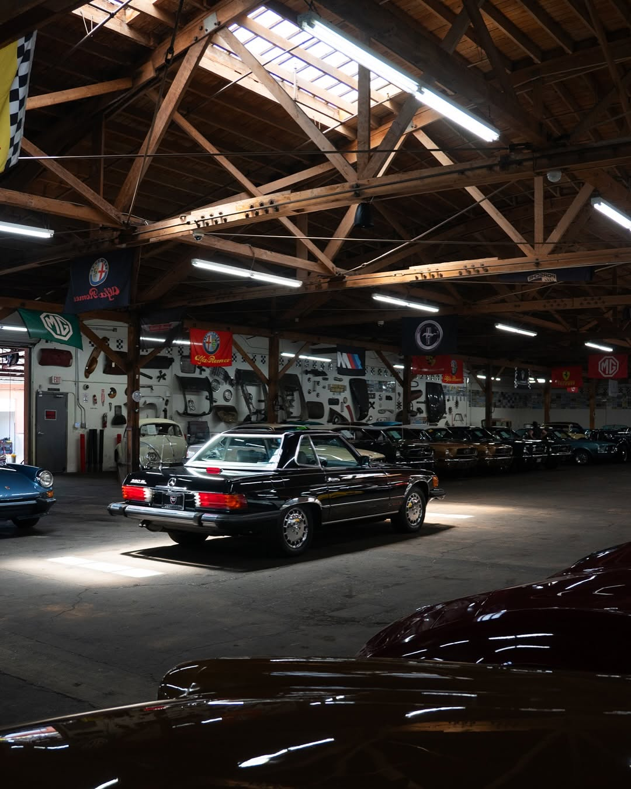

Beverly Hills Car Clubby Alex Manos
The world's finest classic automobiles, bought and sold by Alex Manos.



Why Beverly Hills Car Club
- Since 2001 Two decades buying and selling European and American classics in Los Angeles.
- Inspected & documented Every car inspected, documented and photographed before it reaches you.
- Delivered worldwide From our Los Angeles showroom to anywhere in the world.

I've been buying and selling the world's finest automobiles for over 20 years.
What began with a single Porsche has become the largest collection of European and American classics under one roof in Los Angeles.


We buy classic cars.
Any condition. Nationwide. Immediate payment.
Trusted by collectors worldwide · Serving enthusiasts since 2001
What they're saying
Alex and his team made selling my classic Porsche absolutely seamless — professional, fair and a genuine pleasure to work with.
The finest collection of European classics I've seen under one roof. They knew the car's history better than I did.
From the first call to delivery, every detail was handled with care. This is how buying a classic should feel.



Los Angeles Since 2001

DSCENE Editor-in-Chief Interviews Alex Manos
“Compare a 1958 Corvette to a Tesla. There's no passion, no emotion. When you sit in that Corvette, you smell the leather.”
Read more
Refined Brute, Ferrari 330GTC
“A racing brute in a fine suit” is how the 330GTC was once described — one of the most elegantly beautiful, as well as puissant, cars ever built.
Read more
Ultimately Unique, Mercedes-Benz 280SL California Special
“There are around 900 million cars in the world, and thousands of models,” remarked Dr. Dieter Zetsche. “But there are only a handful of automotive icons: our SL is one of them.”
Read moreNews & Events
Stories from the showroom — new arrivals, events and the cars worth keeping.